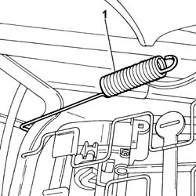
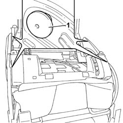
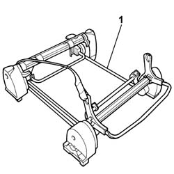

7050A71 SUPPORT/GUIDES FOR INDIVIDUAL REAR SEAT, LEFT OR RIGHT OR CENTRE- R.R. WITH SEAT REMOVED
- Path
- Procedures > 70 FITTINGS > 7050 REAR SEATS > 7050A REAR SEAT ASSEMBLY > 7050A71 SUPPORT/GUIDES FOR INDIVIDUAL REAR SEAT, LEFT OR RIGHT OR CENTRE- R.R. WITH SEAT REMOVED
- Kind
- repair procedure (removal / refitting; the operation number is the code)
- Applies to
- all engines; all production periods
- Interactive page
- https://sloeber94.github.io/elrnDB-fUlss/en/#/179007894
Applies to: all engines; all production periods
 Removing
Removing
 Refitting
RefittingOp. 7050A96 REAR SEAT GUARD (ONE) - R R
Op. 7050A87 JOINT COVER GUARD FOR (ONE), LEFT OR RIGHT INDIVIDUAL SEAT - R.R. WITH SEAT REMOVED
1. Release the rear seat rod.

Applies to: all engines; all production periods
1. Undo the bolts fixing the guide support.

Applies to: all engines; all production periods
1. Remove the guide support.

Applies to: all engines; all production periods
Refitting
Removing- Fit the guide support.
- Tighten the guide support retaining bolts to torque.
- Attach the rear seat manual rod.
Op. 7050A87 JOINT COVER GUARD FOR (ONE), LEFT OR RIGHT INDIVIDUAL SEAT - R.R. WITH SEAT REMOVED